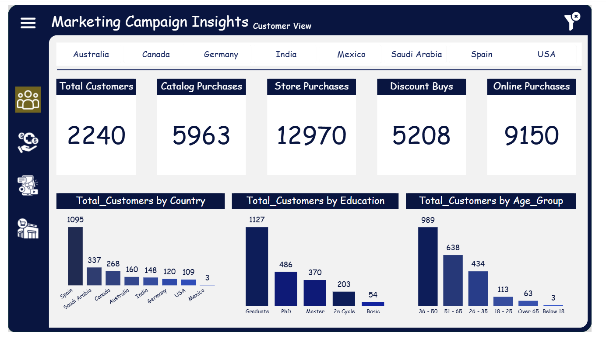
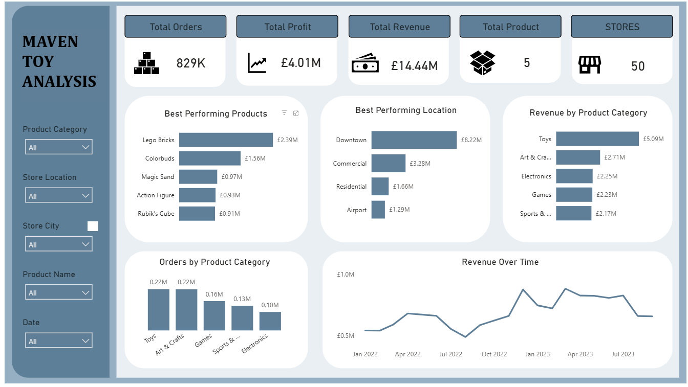

data engineer · federated engineers
I turn raw data into decisions and cut the cost of getting there.
By building Cloud data pipelines, cost-optimised AWS architectures, and analytics infrastructure that scales.
selected work
Data-Engineering Projects
Wrote the same dataset to S3 partitioned and non-partitioned, registered both in Glue, and measured the real Athena cost difference. Partitioning cut scanned data from 33.1 MB to 2.18 MB on the same query, a pattern that projects to roughly $4,660/month saved at production scale.
An end-to-end weather data pipeline — ingestion, transformation, and storage, containerised with Docker for reproducible runs and orchestrated with apache airflow.
data analysis
BI dashboards

Interactive dashboard analyzing customer lifetime value and campaign ROI; segmented customers by demographics and spend behavior to identify high-value audiences and revenue drivers.

Designed a sales and profitability dashboard highlighting top products and store performance; used DAX measures and time-series visuals to track revenue trends and growth opportunities.
tools
Tech stack
 Python
Python Power BI
Power BI dbt
dbt Snowflake
Snowflake Apache Airflow
Apache Airflow Docker
Docker AWS GlueAmazon Athena
AWS GlueAmazon Athena Amazon S3AWS DMS
Amazon S3AWS DMSbackground
About
I'm a data engineer at Federated Engineers, with a background in BI and data analytics. I hold an MSc in Data Science and Artificial Intelligence from the University of Hull.
I started out analysing data, now I build the pipelines that get it there. I build Cloud Native infrastructures on AWS to solve various clients business needs.
Outside of client work, I write about cloud and data engineering on Medium and LinkedIn, covering AWS fundamentals, IAM, S3, and pipeline design.
get in touch
Contact
Open to data/Analytics engineering roles and consulting — reach out below.